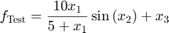

Tutorial: How to statistically analyze Kriging results
Contents
Test Function
The test function as follows:

That is, the output is related to the first input variable by a Michaelis Menten curve(steep increase for small values followed by a plateau). The second input variable leads to oscillation and the third input variable leads to an linear monotonically increase. The effect of the first and second input are coupled with each other.
For a better visualization, pair-wise combination of input variables are plotted against the output. Remaining input variable was hold constant at the value of 2.
close all
visualizeTestFunction();
Initialization
Step 1: Create a new Kriging analysis object. For more details see documentation of tutorialCreatingObject
[KrigingObj]=tutorialCreatingObject(false);
% Remember the Currently used object
indexKrigingObj = 1;
nInputVar = KrigingObj.KrigingObjects{indexKrigingObj}.getnInputVar;
Classical Design of Experiment Analysis (ANOVA)
Classical design of experiments is a powerful tool for efficiently analysis how input variables influence the ouput variable. It allows not only to understand single effects but also how input variables interact with each other.
Classical design of experiments is mainly based on parameter estimation of polynomials. Parameter estimation can naturally make use of covariance information of measurments. Kriging automatically provides an estimated covariance matrix can therefore contribute to higher accuracy and statistical reliablity.
Central composite design analysis allows the estimation of linear, quadratic effects and pair-wise interactions. It is based on a full factorial design with additional "start points". If ShowDetail is active, a table is displayed at the command window with following structure:
- Para Combination: Describe which effect is estimated in the associated row
- Mean(Coefficient): Estimated effect value
- Std(Coefficient): Estimation Error
- tValue: Statistical value indicating significance associated effect
- P(>|t|): Probability of beeing insignificant. Probabilitied under a defined thershold (e.g. 0.05) can be considered as significant
KrigingObj.setShowDetails(true) KrigingObj.doCompositeDesignAnalysis(1)
Receive Information
Analysis Result: Para Combination |Mean(Coefficient)|Std(Coefficient)| tValue| P(>|t|)| Intercept | 2.214568e-01| 8.177437e-01| 2.708145e-01| 7.973577e-01| Input 1 | -9.057811e-01| 2.367225e-02| -3.826342e+01| 2.297270e-07| Input 2 | -9.067613e-01| 2.367225e-02| -3.830483e+01| 2.284916e-07| Input 3 | 4.999930e+00| 2.367225e-02| 2.112149e+02| 4.514167e-11| Input 1*Input 2 | -9.066381e-01| 2.367326e-02| -3.829799e+01| 2.286950e-07| Input 1*Input 3 | 1.095934e-12| 2.367326e-02| 4.629420e-11| 1.000000e+00| Input 2*Input 3 | -7.717441e-14| 2.367326e-02| -3.259983e-12| 1.000000e+00| Input 1^2 | 4.711986e+00| 1.140411e+00| 4.131830e+00| 9.068815e-03| Input 2^2 | -5.282005e+00| 1.140411e+00| -4.631666e+00| 5.675228e-03| Input 3^2 | 4.441140e+00| 1.140411e+00| 3.894331e+00| 1.147468e-02|
All information in the table can also be obtained using the get-functions:
KrigingObj.getANOVACoefficients; KrigingObj.getANOVAStdOfCoefficients; KrigingObj.getANOVATvalue; KrigingObj.getANOVAPvalue;
The full factorial design allows an estimation of all possible interactions. It is a saturated design (no degree of freedom) and it is therfore not possible to perform test for significance.
KrigingObj.doFullFactorialAnalysis(1)
Legend: A := Input 1 B := Input 2 C := Input 3 Analysis Result: Para Combination |Mean(Coefficient)|Std(Coefficient)| tValue| P(>|t|)| Intercept | 4.093330e+00| 2.367348e-02| 1.729079e+02| 0.000000e+00| A | -9.058094e-01| 2.367331e-02| -3.826289e+01| 0.000000e+00| B | -9.067478e-01| 2.367331e-02| -3.830253e+01| 0.000000e+00| C | 4.999955e+00| 2.367331e-02| 2.112064e+02| 0.000000e+00| AB | -9.066381e-01| 2.367326e-02| -3.829799e+01| 0.000000e+00| AC | 8.894928e-13| 2.367326e-02| 3.757374e-11| 0.000000e+00| BC | -7.152965e-13| 2.367326e-02| -3.021538e-11| 0.000000e+00| ABC | 1.277012e-12| 2.367319e-02| 5.394337e-11| 0.000000e+00|
Optimality Analysis
In case of optimization, it is necessary to identify regions which lead to output values that are significant bigger (or smaller) than remaining input space. Under the assumption of a Gaussian process, Kriging provides both model prediction and prediction error. These statistical properties can be used for a statistical test, such as a z-test
More Information about the visualization Tools you can find here: tutorialVisualizingData
% Determine optimum for a single input variable KrigingObj.setMinMax(indexKrigingObj,1) % Decide for a Maximization Problem KrigingObj.setSignificanceLevel(0.075) % By default 0.05, the smaller the more restrictive the test. KrigingObj.calcInterpolation_2D(indexKrigingObj,2,[1,3],[2,2]) KrigingObj.plotOptimum2D(indexKrigingObj); % Set format appropriate for documentation hLegend=legend; set(hLegend,'Location','South') set(gcf,'Position', [100, 100, 330, 330/4*3]); set(gca,'FontSize',10) % Determine optimum for two input variables KrigingObj.calcInterpolation_3D(indexKrigingObj,[1,2],3,2) KrigingObj.plotOptimum3D(indexKrigingObj); % Set format appropriate for documentation hLegend=legend; set(hLegend,'Location','NorthWest') set(gcf,'Position', [100, 100, 330, 330/4*3]); set(gca,'FontSize',10) % Determine optimum in a screening plot KrigingObj.setReferencePoint(ones(1,nInputVar)*2) KrigingObj.calcScreeningAnalysis(1) % Calculate interpolation KrigingObj.plotScreeningAnalysis(1,'Optimum') % Plot and test for optimum % Set format appropriate for documentation set(gcf,'Position', [100, 100, 700, 700/4*3]); set(gca,'FontSize',10)
Expected Improvement
Expected Improvement is one of most powerfull tools of Kriging when it comes to optimization. In this context, potential improvement is defined by the chance that a measurement at an unknown location lead to a better (higher, in case maximization) output value compare to current best result.
In the context of Kriging, output variables are Gaussian distributed and the expected improvement can be calculated as
The expected improvement represents a compromise between good prediction values and prediction error. Consequently, locations with good prediction values but also high prediction variance have high expected improvement values.
Expected improvement can be calculated at any arbitrary point using
% Calculate expected improvement at point of interest
pointOfInterest = [9,8,10];
KrigingObj.calcExpectedImprovement(indexKrigingObj,pointOfInterest)
Expected Improvement can also be visualized in the same manner as the model prediction
% 2D KrigingObj.calcInterpolation_2D(indexKrigingObj,2,[1,3],pointOfInterest([1,3])) KrigingObj.plotExpectedImprovement_2D(indexKrigingObj); % Set format appropriate for documentation hLegend=legend; set(hLegend,'Location','South') set(gcf,'Position', [100, 100, 330, 330/4*3]); set(gca,'FontSize',10) % Determine optimum for two input variables KrigingObj.calcInterpolation_3D(indexKrigingObj,[1,2],3,pointOfInterest(3)) KrigingObj.plotExpectedImprovement_3D(indexKrigingObj); % Set format appropriate for documentation campos([-22.9507 -44.2029 2.8223]) hLegend=legend; set(hLegend,'Location','NorthWest') set(gcf,'Position', [100, 100, 330, 330/4*3]); set(gca,'FontSize',10) % Determine optimum in a screening plot KrigingObj.setReferencePoint(pointOfInterest) KrigingObj.calcScreeningAnalysis(1) % Calculate interpolation KrigingObj.plotScreeningAnalysisExpectedImprovement(1) % Plot and test for optimum % Set format appropriate for documentation set(gcf,'Position', [100, 100, 700, 700/4*3]); set(gca,'FontSize',10)
ans =
0.2598